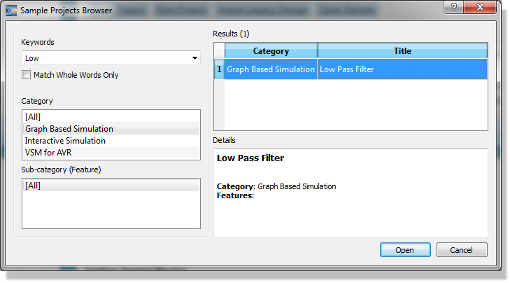
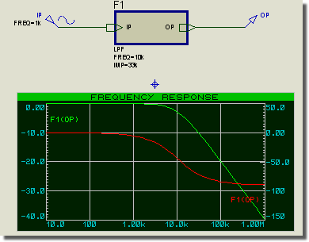
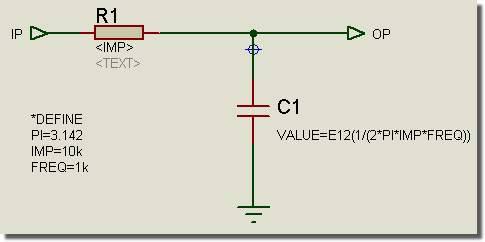
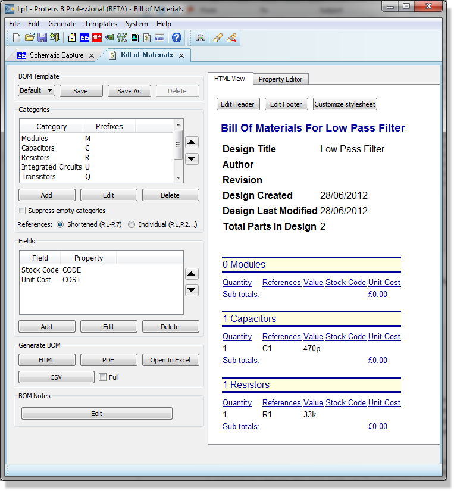

Proteus has a unique and tremendously powerful feature which combines sheet properties, object properties and hierarchical design to facilitate parameterized circuits. A parameterized circuit is one in which some of the component values (or other properties) are given as formulae rather than as constant values. Naturally, the formulae contain variables or parameters and the values for these are taken from the sheet properties defined for that particular instance of the circuit. It then follows that, in the context of a hierarchical design, different instances of the circuit can have different parameters and therefore different component values.
For more information about hierarchical design see Hierarchical Designs. If you have no idea what a hierarchical design is, we suggest you skip this section entirely for the time being!
Parameterized circuits are best illustrated by an example design which you can load from the samples browser (Open Sample on the Proteus home page) under Graph Based Simulation, Low Pass Filter.

The root sheet of this design is shown below:

It consists of a single sub-circuit which has two user properties defining the desired frequency and impedance for the filter. The module attached to the sub-circuit is the actual parameterized circuit (Use either the design explorer or the Next Sheet command to navigate to this sheet).
More information on the Design Explorer can be found here.

The Sub-circuit sheet of the LPF sample
There are several points to note about it:
PI, IMP and FREQ are all sheet properties. PI comes from the DEFINE block whilst IMP and FREQ come from the parent sub-circuit.
If we generate an HTML Bill of Materials, you will see the following :

The HTML Bill of Materials for the LPF Sample Design
Proteus has evaluated 1/(2*3.142*33000*10000)) to get approximately 0.000000000482 and then rounded this to the nearest E12 value - 470p.
There are in fact two distinct processes going on in the above example:- property substitution and property expression evaluation. Both have their advantages and disadvantages and the following sections discuss each in more detail.
This is the mechanism that is used for the resistor value and will operate whenever the netlist compiler encounters a property value containing a property keyword enclosed in chevrons (<>). If the keyword matches a sheet property, then the expression in chevrons is replaced with the value of the sheet property. If no sheet property exists, then a netlist warning is generated and the property is removed from object.
There are two main cases where property substitution is useful:
In contrast to property substitution which is a purely textual process, property expression evaluation involves Proteus in numerically evaluating a property value that is in the form of a formula, and replacing it with its value. In addition, Proteus can also round the resulting number to an E12 or E24 series value.
There are three forms of syntax:
EVAL (...)
E12 (...)
E24 (...)
In all cases, the parentheses should contain a mathematical expression which may include the operators plus (+), minus (-), times (*) and divide (/) and values. Values can be constant numbers, or the names of sheet properties. Multiplication and division have higher precedence but further levels of parentheses may be used to override this as required.
Some example expressions are shown below:
| Expression | Description |
|
EVAL(1/(A+B)) |
A and B are sheet properties. |
|
E12(20k+2*F*PI) |
20k automatically treated as 20000. |
|
E24(3+4*5) |
Evaluates to 24. |
Although in some ways more powerful than property substitution, there are some limitations:
The property expression evaluation mechanism supports the ability to round the resulting value to the nearest E12 or E24 value. This prevents parameterized circuits ending up with non-available or multi-digit floating point values.
You should note:
Of course, if you have Proteus VSM, you can run a simulation and see how the values Proteus has chosen affect the circuit performance.